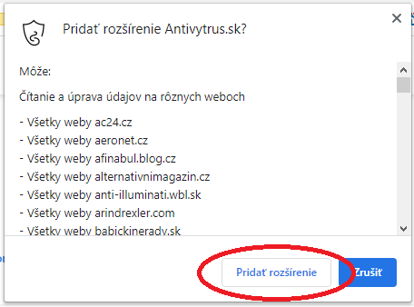
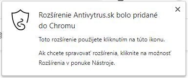
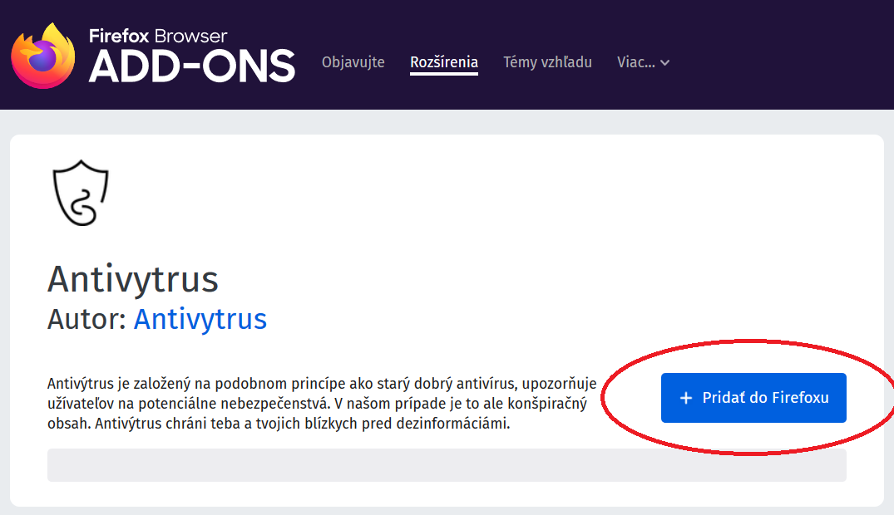
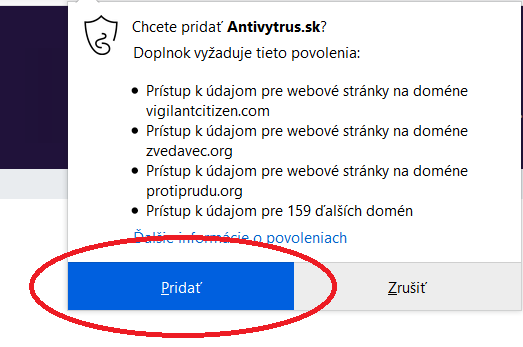
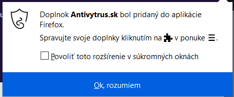

O projekte
Trošku viac informácií o projekte Antivýtrus.
Jednoduchý návod ako si Antivýtrus nainštalujete do svojho počítača alebo mobilu.
Zatiaľ nám rozšírenie funguje iba na Google Chrome alebo Mozillu Firefox, čiže ak máte niečo iné, budete zatiaľ musieť dezinformácie odhaľovať sami. Ak neviete, pozrite sa na ikonku. Google Chrome vyzerá takto:  a Mozilla Firefox takto: .
a Mozilla Firefox takto: .
Vpravo hore uvidíte tlačítko s nápisom "Pridať do Chromu". Neváhajte ani sekundu a kliknite naň. Ak ho neviete nájsť, pomôže vám nasledujúci obrázok:
Pravdepodobne na vás vyskočí upozornenie. To je v poriadku, jedná sa len o to, že čítame dáta z webových stránok zo zoznamu. Podľa toho vieme, ktorá stránka obsahuje dezinformácie a vďaka tomu vás pred nimi môžeme ochrániť. Upozornenie vyzerá približne takto: 
A keď ho odkliknete, zobrazí sa informácia o úspešnom nainštalovaní: 
Vualá, hotovo. Ani to nebolelo, však? Teraz vás už Antivýtrus chráni pred dezinformáciami na internete.
Začneme jednoducho. Vašou prvou úlohou bude kliknúť na tlačítko s nápisom "Pridať do Firefoxu". Nie je ťažké ho nájsť, no ak máte problém, pozrite na tento obrázok: 
Pravdepodobne na vás vyskočí upozornenie. To je v poriadku, jedná sa len o to, že čítame dáta z webových stránok zo zoznamu. Podľa toho vieme, ktorá stránka obsahuje dezinformácie a vďaka tomu vás pred nimi môžeme ochrániť. Upozornenie vyzerá približne takto: 
A keď ho odkliknete, zobrazí sa informácia o úspešnom nainštalovaní: 
Vualá, hotovo. Ani to nebolelo, však? Teraz vás už Antivýtrus chráni pred dezinformáciami na internete.
Trošku viac informácií o projekte Antivýtrus.
Ako sa porozprávať o dezinformáciách s naším okolím?
Trošku viac informácií o tom, kto stojí za Antivýtrusom.